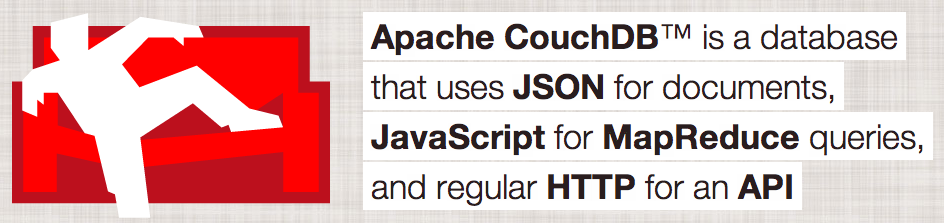
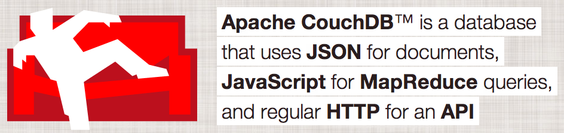
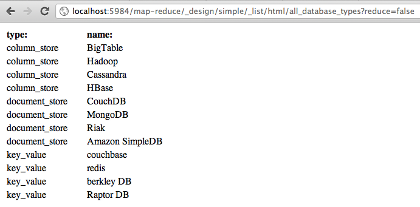
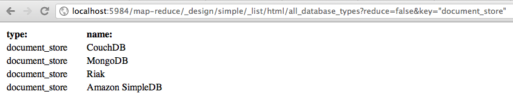
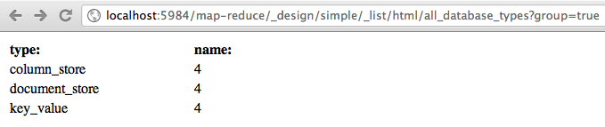
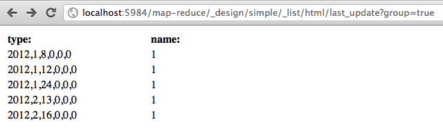
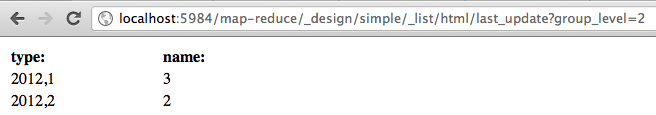

couchdb.apache.org says ...
... let's see!
couchdb.apache.org says ...
... let's see!
Andy Wenk
May 10, 2012 - JUG-OSTFALEN
/ Andy Wenk
/ Senior Developer at SinnerSchrader Hamburg
/ Having fun with Ruby, Rails, JavaScript, HTML5, CSSx, PHP
/ ... and CouchDB!
/ had fun with PostgreSQL also
/ get in touch:
andy@nms.de
andreas.wenk@sinnerschrader.com
G+
@awenkhh
couchdb-buch.de
CouchDB is built of the Web
Relational databases have been very successful in the past, and are likely to remain so, but in a certain sub-set of usage scenarios, non-relational systems are starting to take their place.
see also: http://kkovacs.eu/cassandra-vs-mongodb-vs-couchdb-vs-redis/
Usage:
Usage:
Usage:
Usage:
Usage:
| Language | Access | designed for | |
| CouchDB | Erlang | HTTP / REST | consistency, ease of use |
| Cassandra | Java | driver, thrift | Best of BigTable and Dynamo |
| MongoDB | C++ | driver | good parts of SQL |
| Neo4J | Java | REST / embedded | relations, search |
| riak | Erlang | REST / driver | Fault tolerance, tunable |
| redis | C | driver / TCP | speed |
MVCC - Multi Version Concurrency Control
ACID
... later
CAP Theorem by Dr. Eric Brewer - approved by Seth Gilbert and Nancy Lynch
In CouchDB when used as distributed system: AP
Mac OS X - homebrew
brew update
brew upgrade
brew install couchdb
brew unlink couchdb
brew install couchdb
couchdb -V
couchdb - Apache CouchDB 1.2.0
Mac OS X - MacPorts (rethink!)
sudo port install couchdb
sudo port upgrade couchdb
Linux
Instructions for UbuntuWindows
InstructionsHello CouchDB:
curl -X GET http://localhost:5984
{"couchdb":"Welcome","version":"1.2.0"}
All DB's
curl -X GET http://localhost:5984/_all_dbs
["_replicator","_users","kassenbuch","multi-ids"]
Create a DB
curl -X PUT http://localhost:5984/jug
{"ok":true}
curl -X GET http://localhost:5984/_all_dbs
["_replicator","_users","jug","kassenbuch","multi-ids"]
Creating a document with POST
curl -X POST http://localhost:5984/jug/ -H "Content-Type: application/json" -d '{}'
{"ok":true,
"id":"03cab906fa68e852be833ebb17001cd4",
"rev":"1-967a00dff5e02add41819138abb3284d"}
id
rev
All documents
curl -X GET http://localhost:5984/jug/_all_docs
{"total_rows":0,"offset":0,"rows":[]}
Creating a document with PUT with usage of a uuid ...
curl -X GET http://localhost:5984/_uuids
{"uuids":["03cab906fa68e852be833ebb17000ff8"]}
curl -X PUT http://localhost:5984/jug/03cab906fa68e852be833ebb17000ff8 -d '{}'
{"ok":true,
"id":"03cab906fa68e852be833ebb17000ff8",
"rev":"1-967a00dff5e02add41819138abb3284d"}
... or with a own id
curl -X PUT http://localhost:5984/jug/first_doc -d '{}'
{"ok":true,"id":"first_doc","rev":"1-967a00dff5e02add41819138abb3284d"}
Updating a document with PUT
curl -X GET http://localhost:5984/jug/first_doc
-d '{"_rev":"1-967a00dff5e02add41819138abb3284d",
"some-content":"Hey how are you dude?"}'
{"ok":true,"id":"first_doc","rev":"2-65ef50076c98c6817fb3ca97c87d8b66"}
possible to use the if-match header
-H "if-match:1-967a00dff5e02add41819138abb3284d"
Deleting a document with GET
curl -X DELETE http://localhost:5984/jug/first_doc?rev=3-73846195cbf86c1a3b94b6c04b6bebc0
{"ok":true,"id":"first_doc","rev":"4-9853b2dfc30eb372590c60a339124cfd"}
possible to use the if-match header
-H "if-match:3-73846195cbf86c1a3b94b6c04b6bebc0"
document is not deleted physically but marked with --deleted: true
curl -X GET http://localhost:5984/jug/first_doc
{"error":"not_found","reason":"deleted"}
Add attachment to document
curl -X PUT http://localhost:5984/jug/second_doc -d '{}'
{"ok":true,"id":"second_doc","rev":"1-967a00dff5e02add41819138abb3284d"}
curl -X PUT http://localhost:5984/jug/second_doc/mvcc.png?rev=1-967a00dff5e02add41819138abb3284d
--data-binary @mvcc.png
-H "Content-Type: image/png"
{"ok":true,"id":"second_doc","rev":"2-f488b45f8c02c4da096d23739051d428"}
Receive attachment from document
curl -i -X GET http://localhost:5984/jug/second_doc/
HTTP/1.1 200 OK
Server: CouchDB/1.2.0 (Erlang OTP/R15B01)
ETag: "2-f488b45f8c02c4da096d23739051d428"
Date: Sun, 06 May 2012 21:03:26 GMT
Content-Type: text/plain; charset=utf-8
Content-Length: 200
Cache-Control: must-revalidate
{"_id":"second_doc",
"_rev":"2-f488b45f8c02c4da096d23739051d428",
"_attachments":
{"mvcc.png":
{"content_type":"image/png",
"revpos":5,
"digest":"md5-RJsN7gjQubg+iqLe96+SxQ==",
"length":12753,
"stub":true
}
}
}
Copy the documents content into another one
curl -i -X PUT http://localhost:5984/jug/third_doc -d '{"first_name": "Andy"}'
{"ok":true,"id":"third_doc","rev":"1-16e80e6f62d44c4569d13e2e7a05e373"}
curl -X PUT http://localhost:5984/jug/fourth_doc -d '{"last_name": "Wenk"}'
{"ok":true,"id":"fourth_doc","rev":"1-18236196ad905238b2b24d33a12eb043"}
curl -X COPY http://localhost:5984/jug/third_doc
-H 'destination:fourth_doc?rev=1-18236196ad905238b2b24d33a12eb043'
{"ok":true,"id":"fourth_doc","rev":"2-21431c6bda57d30383987ae2510c309e"}
curl -X COPY http://localhost:5984/jug/third_doc -H 'destination:fifth_doc'
{"ok":true,"id":"fifth_doc","rev":"1-993591377f6cb544ddea933a6ed28e38"}
Copying third_doc to fourth_doc is overwriting not merging!
Copying third_doc to fifth_doc will create the fith_doc newly
Check also:
Invented by Google
some documents with structure
{
"_id": "f165fc62ed5d14ca84128de1d6034a36",
"_rev": "1-357fda3050771ca747b95c0108a21fe6",
"type": "document_store",
"name": "CouchDB"
}
simplest possible view
{
"_id": "_design/simple",
"_rev": "2-0404067f53ecc72bc660b8bed7576604",
"views": {
"all_database_types": {
"map": "function (doc) { emit(doc.type, doc.name); }"
}
}
}
firing the view
curl -X GET 'http://localhost:5984/map-reduce/_design/simple/ \
_view/all_database_types'
{"total_rows":12,"offset":0,"rows":[
{"id":"f165fc62ed5d14ca84128de1d6036c8c","key":"column_store","value":"BigTable"},
{"id":"f165fc62ed5d14ca84128de1d60375a4","key":"column_store","value":"Hadoop"},
{"id":"f165fc62ed5d14ca84128de1d6037f0e","key":"column_store","value":"Cassandra"},
{"id":"f165fc62ed5d14ca84128de1d6038002","key":"column_store","value":"HBase"},
{"id":"f165fc62ed5d14ca84128de1d6034a36","key":"document_store","value":"CouchDB"},
{"id":"f165fc62ed5d14ca84128de1d6035544","key":"document_store","value":"MongoDB"},
{"id":"f165fc62ed5d14ca84128de1d60358c0","key":"document_store","value":"Riak"},
{"id":"f165fc62ed5d14ca84128de1d60367ac","key":"document_store","value":"Amazon SimpleDB"},
{"id":"f165fc62ed5d14ca84128de1d60387fb","key":"key_value","value":"couchbase"},
{"id":"f165fc62ed5d14ca84128de1d6038f3f","key":"key_value","value":"redis"},
{"id":"f165fc62ed5d14ca84128de1d6039f11","key":"key_value","value":"berkley DB"},
{"id":"f165fc62ed5d14ca84128de1d603a8b6","key":"key_value","value":"Raptor DB"}
]}
attention: start using single quotes for the URL - otherwise cURL will fuck up!
firing the view and receive only data for type=column_store
curl -X GET 'http://localhost:5984/map-reduce/_design/simple/ \
_view/all_database_types?key="document_store"'
{"total_rows":12,"offset":4,"rows":[
{"id":"f165fc62ed5d14ca84128de1d6034a36","key":"document_store","value":"CouchDB"},
{"id":"f165fc62ed5d14ca84128de1d6035544","key":"document_store","value":"MongoDB"},
{"id":"f165fc62ed5d14ca84128de1d60358c0","key":"document_store","value":"Riak"},
{"id":"f165fc62ed5d14ca84128de1d60367ac","key":"document_store","value":"Amazon SimpleDB"}
]}
extending the view with a reduce function
{
"_id": "_design/simple",
"_rev": "2-0404067f53ecc72bc660b8bed7576604",
"views": {
"all_database_types": {
"map": "function (doc) { emit(doc.type, doc.name); }"
"reduce": "_count"
}
}
}
curl -X GET 'http://localhost:5984/map-reduce/_design/simple/ \
_view/all_database_types?group=true'
{"rows":[
{"key":"column_store","value":4},
{"key":"document_store","value":4},
{"key":"key_value","value":4}
]}
If you want to fire the view without reduce, use the parameter reduce=false
See also:
basic _design document structure
{
"_id": "_design/simple",
"_rev": "13-49b3f4710c9b9ecb4bdd9ae8a8ed6c8b",
"views": {
"name": {
"map": "...",
"reduce": "..."
}
},
"shows": {
"name": "..."
},
"lists": {
"name": "..."
},
"language": "javascript"
}
"shows": {
"html": "function(doc, req){log(doc); log(req); if(doc) {return \
'<table><tr><td>id:</td><td>' +doc._id+ \
'</td><tr><tr><td>type:</td><td>'+doc.type+ \
'</td></tr><tr><tr><td>name:</td><td>'+doc.name+ \
'</td></tr><tr><td>last_update:</td><td>'+Date(doc.last_update)+
'</td></tr></table>'} else {return '<h4>Für die angegebene ID' +req.id+ \
' gibt es kein Ergebnis</h4>'}}"
}
curl -X GET http://localhost:5984/map-reduce/_design/simple/_show/ \
html/f165fc62ed5d14ca84128de1d6034a36
<table><tr><td>id:</td><td>f165fc62ed5d14ca84128de1d6034a36</td><tr><tr><td>type:</td><td>document_store</td></tr><tr><tr><td>name:</td><td>CouchDB</td></tr><tr><td>last_update:</td><td>Tue May 08 2012 21:38:03 GMT+0200 (CEST)</td></tr></table>
basic methods
| start() | set options for output - e.g a Header |
| getRow() | content of one document |
| send() | generate the output |
"lists": {
"html": "function(head, req){ \
var row, table = ''; \
start({'headers':{'content-type':'text/html'}}); \
table += \
'<table width=\"300\"><tr><td><b>type:</b></td><td><b>name:</b></td></tr>'; \
while(row=getRow()) { \
table += '<tr><td>' +row.key+ '</td><td>' +row.value+ '</td></tr>'; \
}; \
send(table + '</table>'); \
}"
},
 
  
"rewrites": [
{
"from": "/all",
"to": "_list/html/all_database_types",
"method": "GET",
"query": {
"reduce": "false"
}
},
{
"from": "/document_store",
"to": "_list/html/all_database_types",
"method": "GET",
"query": {
"reduce": "false",
"key": "document_store"
}
},
...
],
Results:
http://localhost:5984/map-reduce/_design/simple/_rewrite/allQ.E.D.
Find the configuration files:
couchdb -c
/usr/local/etc/couchdb/default.ini
/usr/local/etc/couchdb/local.ini
[vhosts]
;example.com = /database/
[vhosts]
;example.com = /database/
map-reduce:5984 = /map-reduce/
restart CouchDB
curl -X GET http://map-reduce:5984/
{"db_name":"map-reduce","doc_count":13,"doc_del_count":0,
"update_seq":69,"purge_seq":0,"compact_running":false,
"disk_size":282728,"data_size":5544,
"instance_start_time":"1336516869140172",
"disk_format_version":6,"committed_update_seq":69}
don't forget to set '127.0.0.1 map-reduce' in /etc/hosts!
change local.ini to:
[vhosts]
;example.com = /database/
map-reduce:5984 = /map-reduce/
map-reduce:5984/stats/ = /map-reduce/_design/simple/_rewrite/
now fire http://map-reduce:5984/stats/all